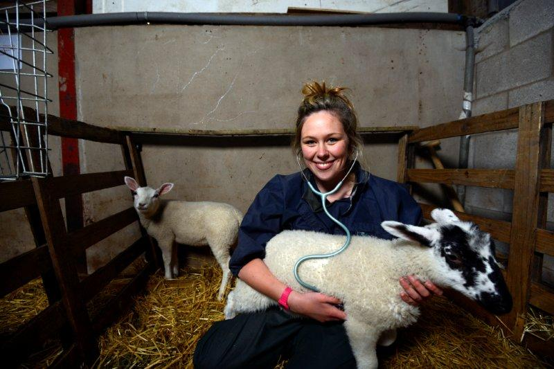
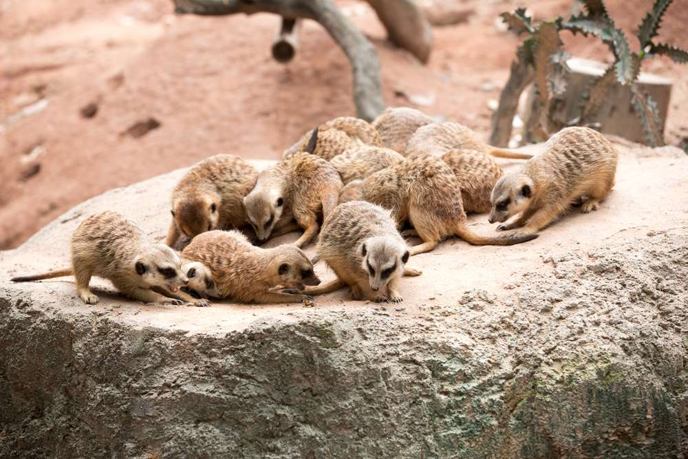
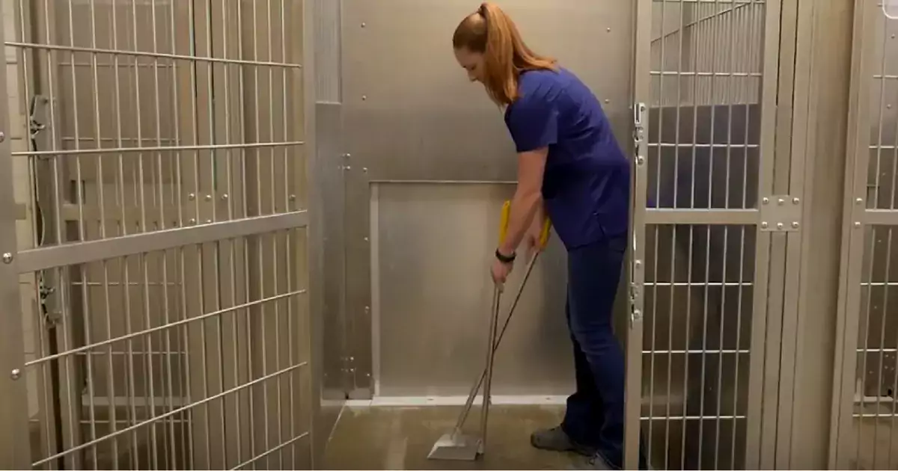
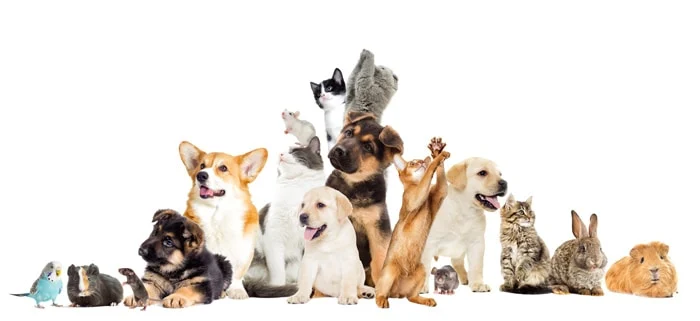

Veterinary Sevices
Our veterinary services primarily involve out-patient care and minor medical procedures involving hospitalization for fewer than four days. All animals shall be kept within an enclosed building.
Provide Proper Meals
We make sure that the diet of animals must include the right amount of the main nutritional elements such as carbohydrates, proteins, fats, vitamins and minerals.
Clean Shelter
Our animal shelter maintains a sanitary environment. Preventing disease transmission through proper cleaning and disinfection techniques as it prevent from dealing with a disease outbreak.
Walk With Them
Walking improves cardiovascular fitness, lower blood pressure, stronger muscles and bones (built up by walking regularly), and decreases stress.

Fundraising Events
These fundraising events are designed to raise awareness and donations for our organization's mission. Fundraising event can be a concert, silent auction, half marathon, neighborhood cookout, and more.
